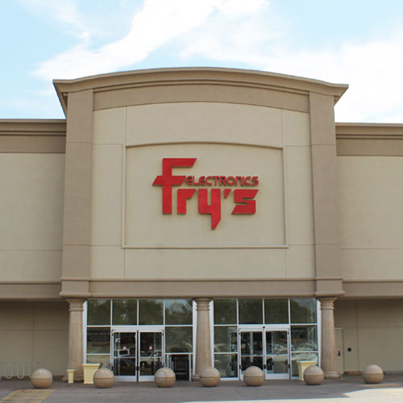

FRYS.COM
Fry's Electronics is an big-box store and retailer of software, consumer electronics, household appliances, cosmetics, tools, toys, gift accessories, magazines, books on specialized areas of electronics, and computer hardware. Fry's has in-store computer repair and custom computer building services. The company has a chain of superstores headquartered in Silicon Valley. Starting with one store located in Sunnyvale, California, the chain operated 34 stores in 9 states by 2019, and as of January 2021 operates 28 stores.
PRODUCTS
Appliances, Gaming, Computers, DJ Equipment,cosmetics, tools, toys, gift accessories, specialized electronics, consumer electronics.
WHERE WILL YOU FIND IT
You will find the frys.com outside in the parking lot.